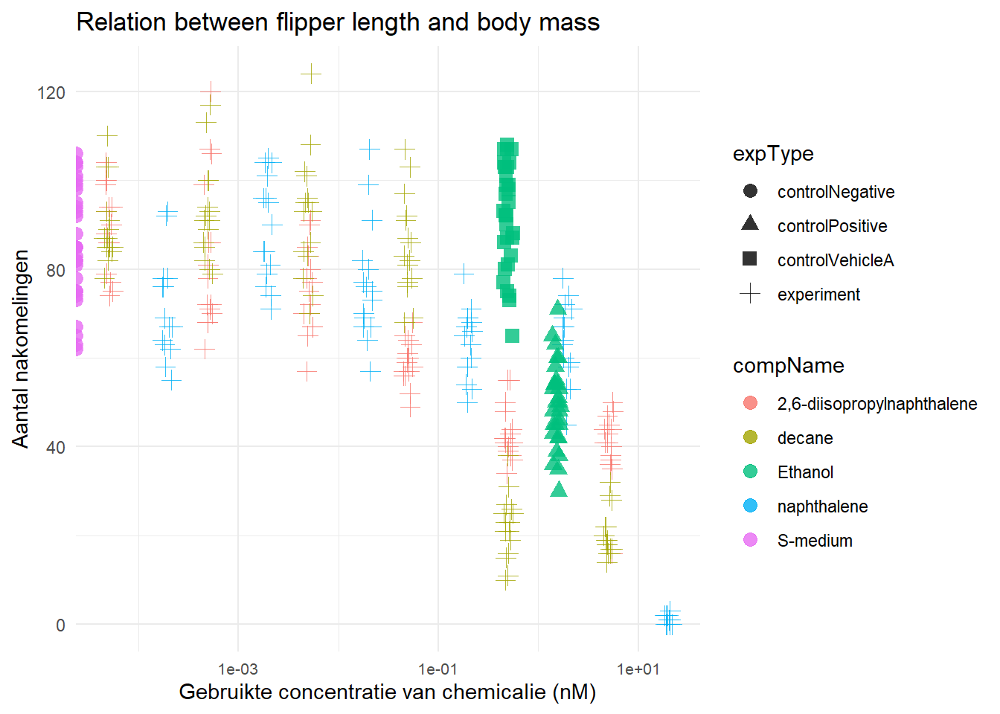

Chapter 7 Data analyse van een ander reproduceren
7.1 Data inlezen
# Laad de libraries tidyverse en readxl
library(tidyverse)
library(readxl)
# Importeer het bestand CE.LIQ.FLOW.062_Tidydata.xlsx in Rstudio
dataset_4a <-read_excel("~/dsfb2/dsfb2_workflows_portfolio/dsfb2_workflows_portfolio/projecten/4a_data_analyse_van_een_ander_reproduceren/CE.LIQ.FLOW.062_Tidydata.xlsx")
De data is goed ingelezen en is al in tidy format gezet, er hoeft dus niks aangepast te worden.
7.2 Data types voor RawData, compName en compConcentration
## [1] "numeric"## [1] "character"## [1] "character"# Maak de kolom compConcentration numeric
dataset_4a$compConcentration <- as.numeric(dataset_4a$compConcentration)## Warning: NAs introduced by coercion## num [1:360] 4.99 4.99 4.99 4.99 4.99 4.99 4.99 4.99 4.99 4.99 ...7.3 Scatterplot
ggplot(data = dataset_4a, aes(x = compConcentration, y = RawData)) +
geom_jitter(
aes(color = compName, shape = expType),
width = 0.05, # kleine jitter op x
height = 0, # geen jitter op y
size = 3,
alpha = 0.8
) +
scale_x_log10() +
labs(
title = "Relation between flipper length and body mass",
y = "Aantal nakomelingen",
x = "Gebruikte concentratie van chemicalie (nM)"
) +
theme_minimal() +
theme(axis.text.x = element_text(size = 8))
7.4 Normaliseer de data
De gemiddelde waarde voor de negatieve controle (controlNegative) moet gelijk zijn als 1. De andere meetwaarden (experiment, controlPositive en controlVehicleA) moeten worden uitgedrukt als een fractie daarvan.
# Bereken het gemiddelde van de negatieve controle
mean_neg_control <- dataset_4a %>%
filter(expType == "controlNegative") %>%
summarise(mean_raw = mean(RawData, na.rm = TRUE)) %>%
pull(mean_raw)
## Het gemiddelde is 85.9
# Voeg de kolom RawData_norm toe die de genormaliseerde waarden bevat
dataset_4a_normalised <- dataset_4a %>%
mutate(
RawData_norm = RawData / mean_neg_control
)
# Controleer data type voor de kolom RawData_norm
class(dataset_4a_normalised$RawData_norm) ## [1] "numeric"## [1] "numeric"# Maak de kolom compConcentration numeric
dataset_4a_normalised$compConcentration <- as.numeric(dataset_4a_normalised$compConcentration)
str(dataset_4a$compConcentration)## num [1:360] 4.99 4.99 4.99 4.99 4.99 4.99 4.99 4.99 4.99 4.99 ...7.5 Scatterplot met genormaliseerde waarden
ggplot(dataset_4a_normalised, aes(x = compConcentration, y = RawData_norm)) +
geom_jitter(
aes(color = compName, shape = expType),
width = 0.05, # kleine jitter op x
height = 0, # geen jitter op y
size = 3,
alpha = 0.8
) +
scale_x_log10() +
labs(
title = "Relation between flipper length and body mass",
y = "Genormaliseerde aantal nakomelingen \n(controlNegative = 1)",
x = "Gebruikte concentratie van chemicalie (nM)"
) +
theme_minimal() +
theme(
axis.text.x = element_text(size = 8)
)
7.6 Controlegroepen
## [1] "experiment" "controlPositive" "controlNegative" "controlVehicleA"De groepen die voor dit experiment waren gebruikt waren als volgt:
-experiment: Deze groep bevat de echte chemicaliën + concentraties die getest moeten worden voor de onderzoeksvraag.
-controlNegative: Is de negatieve controle. Hier is géén toxische stof aan toegevoegd.
-controlPositive:Is de positieve controle. bij deze conditie wordt een chemicalie gebruikt waarvan bekend is dat het een toxisch effect heeft.
-controlVehicleA: Bevat alleen oplosmiddel (bijvoorbeeld DMSO of een buffer). Hiermee wordt gecontroleerd of het oplosmiddel zelf effect heeft.
De data werd genormaliseerd omdat dit de experimentele variabiliteit tussen groepen verminderd. Hierdoor wordt directe vergelijking van behandelingseffecten tussen verschillende verbindingen en concentraties mogelijk.
7.7 Stappenplan voor vervolgonderzoek
Om de IC50 concentratie van de verschillende chemicaliën te bepalen, moet er een dose-response analyse met een log-logistisch model worden uitgevoerd. In Rstudio is hiervoor het drc package beschikbaar. Om deze analyse uit te kunnen voeren, moeten de volgende stappen worden uitgevoerd:
- Installeer het drc package
- Laad de data in Rstudio.
- Controleer of de data in tidy format staat (voor het bestand CE.LIQ.FLOW.062_Tidydata.xlsx is dit al het geval)
- Voer normalisatie van de data uit, waarbij het gemiddelde van de negatieve controle gelijk wordt gesteld aan 1.
- Maak een scatterplot waarin dose en response tegenover elkaar worden gezet.
- Kies een niet-liniair model, vaak wordt het log-logistisch model (LL.4) gebruikt
- Model fitten met drc, oftewel: probeer een wiskundig model te laten passen op de biologische data.
-Hiermee wordt onderzocht welke curve het verband tussen de dosis en het effect het beste omschrijft.
-Vaak is dit een S-curve.
- Visualiseer de dosis-response curves.
- Voer de IC50 / ED50 berekening uit.
- Vergelijk de IC50 waarden van de verschillende chemicaliën.
- Interpretatie van resultaten.
- Voeg een modelvalidatie toe.